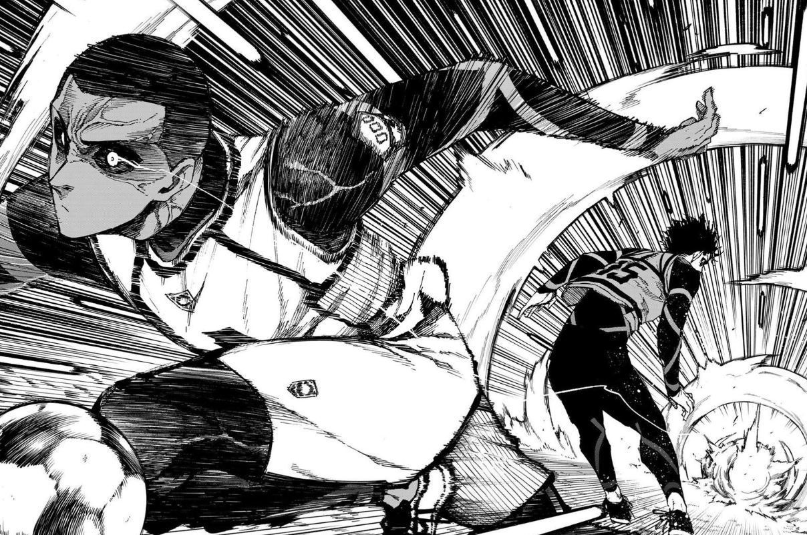
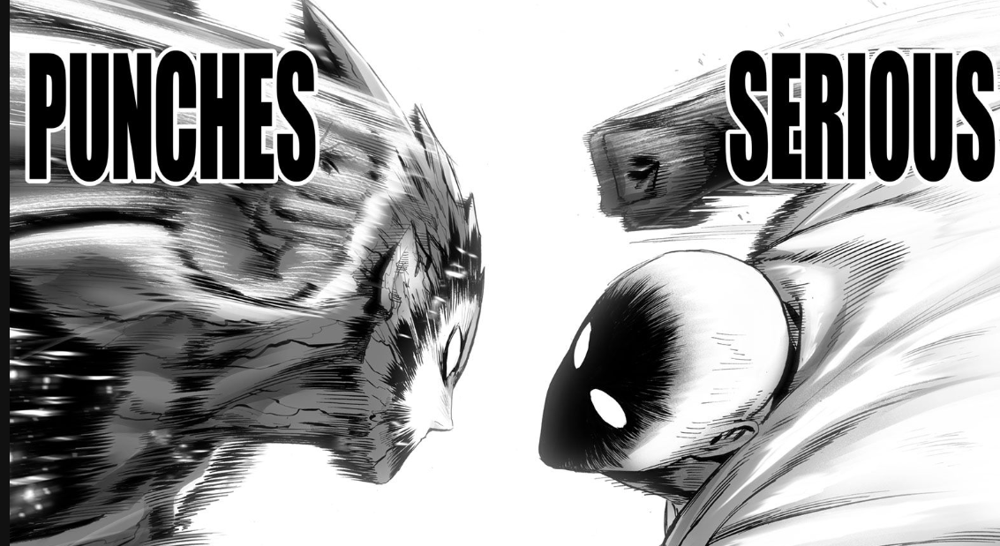

If you somehow skipped over the home page, Hello my names Sean I was born on December 22 2006.
I live in Brooklyn, New York and have been for my whole life. Im currently A junior at Benjamin Banneker Academy and spend half of my school day at the Brooklyn Steam Center.
I am cureently interested in the Majors Cyber Security and Computer programming and I also like to learn Cooking as my Secondary because of my love for cooking and learning about New foods.
Throughout my life i've had multiple things I have had as interest.One of these interest is Manga. Some of my favourite mangas are both BLue lock and One Punchman which have become preety popular over the past few Years which im happy to seem.
 
For my whole life I have been a adved believer God and that Jesus CHrist and that he died for our Sins. I Hope that thoe that read this website and see this also try and learn about Christ and what he has done for us
One of my favourite Hobbies is Gaming. Ive been gaming for a While now and I usally play with my friends. Some of the games I play are Deepwoken, Rainbow Six siege, Modern warfare 2 ,overwatch 2 and Minecraft